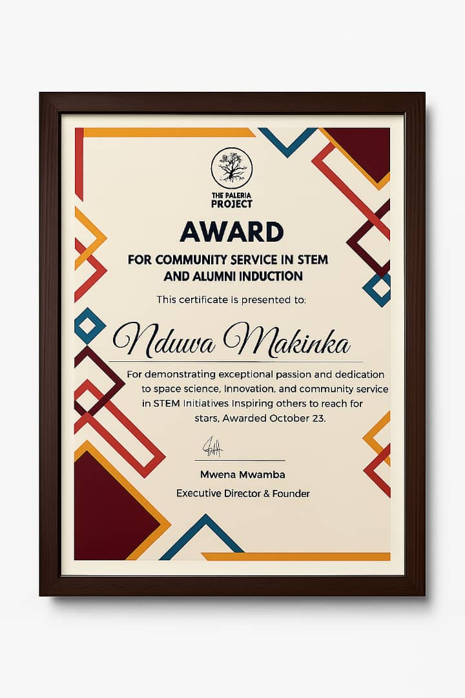
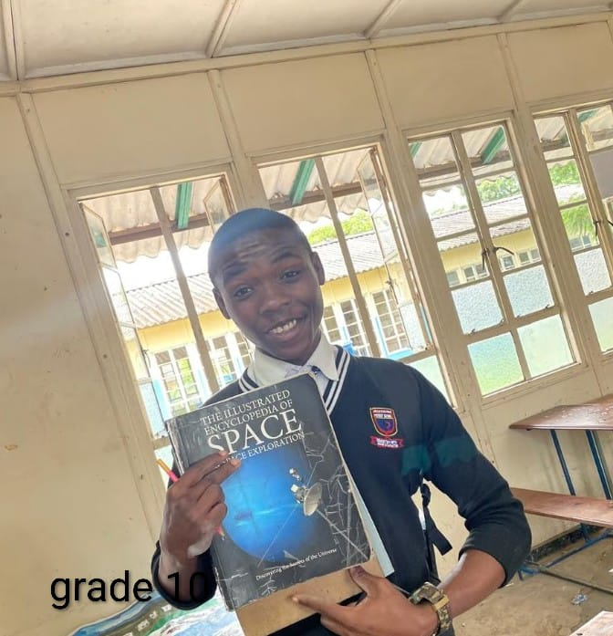
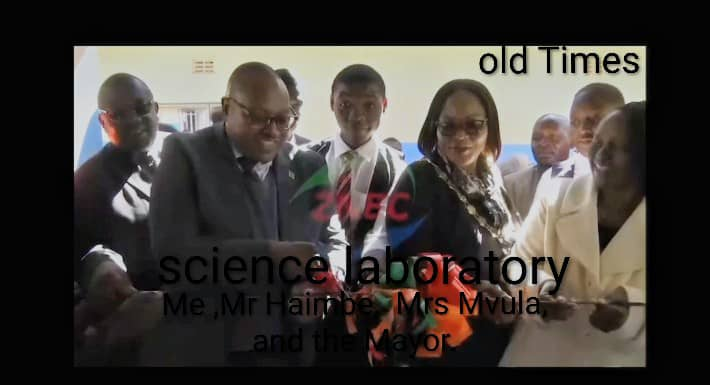
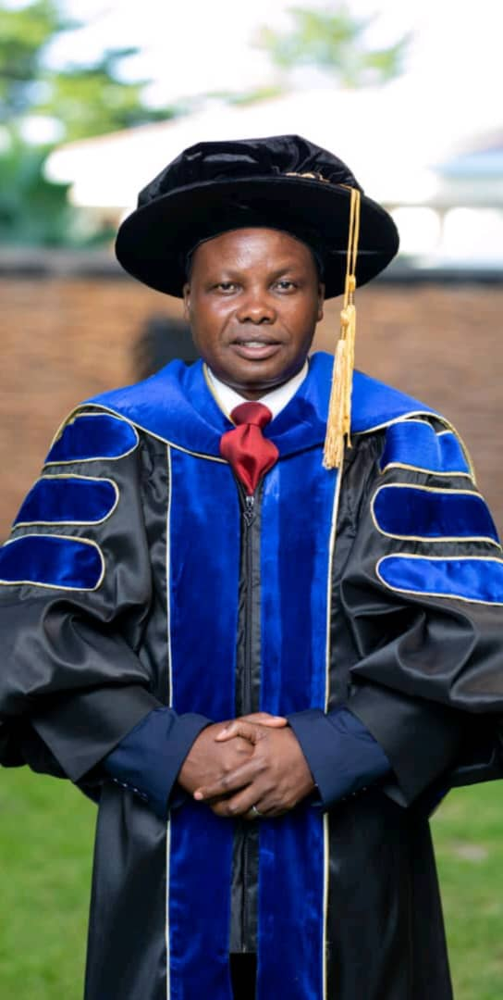

Web Developer |Aspiring Aerospace Engineer| Programmer | Aerodynamic designer .
+260973935674
"Empowered by curiosity, driven by passion, and guided by purpose. I weave innovation, leadership, and impact into every chapter of my life. Explore my journey, and discover how the threads of technology, academia, and service converge to shape a story of growth, resilience, and possibility."

Awarded for STEM Brilliance in School
Recognized for exceptional academic excellence and outstanding performance in school.Throughout my high school journey, I've had the privilege of being recognized for my passion and excellence in Science, Technology, Engineering, and Mathematics (STEM). My love for learning and innovation led me to undertake projects that not only deepened my understanding of complex concepts but also allowed me to contribute to solving real-world problems. I'm grateful for the support of mentors like Msr Sikazwe and Madam Mwenya who encouraged me to push beyond my limits and explore the vast possibilities of STEM. This recognition is a testament to the power of perseverance, curiosity, and the pursuit of knowledge.

President of Science Club, Jets
Led a team of innovators and thinkers, fostering a culture of curiosity and exploration in the field of science and technology.My Journey with JETS Club, I've been privileged to be part of the JETS (Junior Engineers, Technicians, and Scientists) Club, an experience that has profoundly shaped my passion for STEM. In Grade 11, I was appointed Vice President of the club, a role that came with immense responsibility and opportunity. It was a testament to the trust my mentors had in me, and I was determined to make the most of it. I poured my heart into leading the club, leveraging my love for reading and learning to contribute to the school community. The following year, I was appointed President, overseeing all club affairs and leading my peers to success in competitions. One of my proudest achievements was working on the Tesla Auxiliary Coil project, exploring the potential of kinetic energy from magnetic fields. I also delved into the development of a G-suit, designed to counteract the effects of high-speed flight on the human body. My journey with JETS began earlier, in Grade 10, when I collaborated with friend Emmanuel Sikazwe on a video game project, sparking my interest in computer programming and coding. These experiences have not only deepened my understanding of STEM concepts but also instilled in me a sense of purpose and leadership.

Tesla Auxiliary Coil Science Project
Designed and developed a groundbreaking project that showcased expertise in electrical engineering and physics.A Journey of Discovery, The Tesla Auxiliary Coil project was a turning point in my journey, sparked by my friends Emmanuel Sikazwe and Kim Wandaba Mwenya during my 10th grade year. Emmanuel, then JETS President, was working on a video game, while Kim was exploring a chemical solution for household grease removal. Their passion was contagious, and I felt encouraged to pursue a project that ignited my own curiosity. I proposed the Tesla Auxiliary Coil, and we spent countless lunch breaks and walks home discussing its potential impact. This project fueled my desire to delve deeper into physics, chemistry, and mathematics, driving me to study harder and understand the underlying principles. The Tesla Auxiliary Coil concept showcases the power of magnetic fields around conductors, leveraging electromagnetism to generate kinetic energy. It's a testament to the laws of physics, which govern electric motors and offer endless possibilities for innovation. For me, this project was more than just an academic exercise – it was a gateway to new discoveries and a deeper understanding of the world around me.
Nominated The most deciplined student
Awarded for being the most deciplined pupil, showcasing my exemplary nature of obediance .A Testament to Grace and Inspiration. My high school graduation was an unforgettable experience, and I'm humbled to have been awarded the Most Disciplined Pupil of the school. I'm grateful to God for this recognition, which I believe is a testament to His grace and the power of His spirit working through me. This award is not just a personal achievement, but a reminder that I've been blessed to be an inspiration to others in my school. I'm thankful for the opportunity to have made a positive impact on those around me, and I'm excited to continue being a source of inspiration and hope for others in the future.
Deputy Head Boy of School
Demonstrated exceptional leadership skills, serving as a role model and mentor to peers while supporting the school administration.Leadership Lessons and Legacy, Being appointed Deputy Head Boy of my school in 12th grade was a huge honor. I was privileged to work under the guidance of Dr. Pastor Mighty Zunga, Mr. Chabula, and Mrs. Musonda, who mentored the prefecture board. This role taught me invaluable lessons in leadership, teamwork, and advocacy. I learned to amplify the voices of the vulnerable and voiceless, many of whom came from humble backgrounds and relied on school as their sole opportunity for growth. I'm particularly grateful to my senior, Taylor Kachingwe, the Head Boy, who embodied humility and exceptional leadership. His ability to listen and empathize inspired me to adopt similar qualities. Together, we made a tangible impact on our school, notably by revitalizing the library, which had fallen into disrepair. With the support of my friends and patrons, we transformed it into a vibrant hub that catered to the needs of all students. The experience and guidance I received have instilled in me a lasting sense of leadership and responsibility, for which I'll forever be grateful to Dr. Pastor Mighty Zunga, Mr. ChaBula, and Mrs. Musonda.

Research Participant, Kenneth Kaunda International Airport
Collaborated with industry experts, gaining insights into the aviation sector and developing a deeperA Turning Point in Aviation My experience at Kenneth Kaunda International Airport was a dream come true. I was thrilled to participate in research on aeronautic engineering, working alongside Mr. Grandson, the senior crew chief, who has become a mentor and inspiration to me. Our in-depth discussions on aircraft science, maintenance, and safety opened my eyes to the intricacies of aviation, and I'm grateful for the opportunity to have learned from him. I was also privileged to learn from Mr. Bryan Mutinta, the technical superintendent, and interact with professionals from various fields, including marshals, crew chiefs, and safety department personnel. Speaking with pilots from Malawi Airways, Ethiopian Airways, and Turkish Airways was a highlight, offering valuable insights into the industry. Stepping into a massive airliner was a surreal experience, and I'm thankful for the chance to have had these interactions. This experience was a game-changer for me, solidifying my passion for aviation and influencing my career aspirations. I'm excited to see where this journey takes me, and I'm grateful to Mr. Granson and all the professionals who shared their expertise and inspiration.
Research Participant, Ministry of Mines
Contributed to cutting-edge research initiatives, gaining valuable experience in data collection, analysis, and interpretation.A Life-Changing Experience at the Ministry of Minds My experience at the Ministry of Minds during my 11th grade was truly surreal. I was privileged to have in-depth conversations with Mr. Kasumba, the chief geologist, who has become a mentor and inspiration to me. His encouragement to work hard and chase my dreams has had a lasting impact on me. Working alongside scientists at the Meteorological Department and the chemistry division was a dream come true, and I was thrilled to see the practical application of the chemistry I learned in class. I was amazed by the work being done at the Ministry, particularly in testing for minerals, and I was motivated to learn more about the processes involved. Seeing the wealth of mineral resources in Zambia was eye-opening, and I realized the immense potential for development in our country. It's clear that we, as a generation, have a crucial role to play in harnessing these resources and driving progress. I'm impressed by the Ministry's efforts to address climate change and promote renewable energy, and I'm proud to see the significant impact they're having on the country's finances. The Ministry's work is a testament to Zambia's potential, and I'm excited to be a part of the next generation of leaders who will shape the country's future.
(An Autobiography OF MAKINKA NDUWA)
As I reflect on my life's journey. I am reminded of the power of resilience, determination, and the unwaverin g support of my loved ones. Growing up, I faced challenges that tested my resolve, but with the guidance of mentors, the love of my family, and my own passion for learning, I discovered my strengths and pursued my dreams.
The Unwavering Support of My Family, At the foundation of my success are my parents. Whose tireless efforts and unwavering support have been the driving force behind my achievements. My mother's fervent prayers and my father's sacrifices have instilled in me the values of hard work, perseverance, and humility. Despite the challenges they faced, they ensured that I had access to quality education, and their love has been a constant source of comfort and motivation. I am forever grateful for their role in shaping me into the person I am today.
A Passion for Learning, My academic journey has been a defining aspect of my life. I developed a strong foundation in science, technology, engineering, and mathematics (STEM), which sparked my interest in aviation, renewable energy, and climate change. As a student, I was driven to excel, and my hard work earned me the nomination as the Most Disciplined Student of the School. This recognition not only reflected my academic discipline but also my commitment to personal growth.
The Impact of Mentors, One of the most significant turning points in my life was when I met Madam Sikazwe. My science teacher and mentor. She saw potential in me and entrusted me with responsibilities that helped me grow both academically and personally. Her guidance and support enabled me to develop a deeper understanding of complex scientific concepts and build meaningful relationships with my peers. Madam Sikazwe's impact on my life extends beyond the classroom; she taught me the value of humility, hard work, and the importance of giving back to my community.
Faith and Values, The role of faith and values in my life has been a profound and transformative experience, providing me with a sense of purpose, direction, and strength. My relationship with God has been a cornerstone of my journey, and the values instilled by my mentors, particularly Dr. Pastor Mighty Zunga, have had a lasting impact on my life. Through faith, I've experienced spiritual growth, gained a moral compass, developed purpose and direction, and cultivated resilience and perseverance. My faith and values have shaped my world view, informed my decisions, and given me a sense of purpose, and I am grateful for the impact they have had on my life, looking forward to continuing to grow and develop in these areas.
Leadership and Personal Growth, Throughout my high school years. I had the opportunity to take on leadership roles, including serving as the President of the Science Club, Jets, and Deputy Head Boy of the School. These experiences taught me the value of teamwork, communication, and problem-solving. I also had the chance to work on innovative projects, such as the Tesla Auxiliary Coil Science Project, which showcased my passion for science and technology.
The Power of Community, My journey has been enriched by the people I have met along the way. Dr. Pastor Mighty Zunga, Introduced me to the love of the gospel and the importance of faith.Madam Sikazwe, who help me build my foundation in my love for science. Madam Mwenya, who organized an astronaut appearance conference, inspired me to pursue my dreams in space exploration. Kim Mwandaba Mwanya and Emmanuel Sikazwe, my friends and peers, supported me through thick and thin, and I am grateful for their friendship.
A Bright Future Ahead,As I look to the future, I am excited to continue pursuing my passions and making a positive impact in the impact in the world. I believe that education is key to unlocking human potential, and I am committed to contributing to the betterment of our education system in Zambia. My experiences have taught me that it takes a village to raise a great leader, and I am grateful for the people who have supported me on this journey.

TOGETHER WE CHANGE OUR WORLD
Discover the inspiring journey of a passionate leader, innovator, and academic achiever. From serving as Deputy Head Boy and transforming school libraries to conducting groundbreaking research at Kenneth Kaunda International Airport and the Ministry of Minds, this is a story of curiosity, resilience, and impact. Explore how these experiences have shaped a vision for Zambia's future, fueled by technology, service, and the power of possibility
THE LORDS PRIDE AND JOY